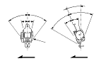

Inspecção dos Cintos de Segurança
|
Para o retractor do cinto de segurança dianteiro com tensor do cinto de segurança,
veja a localização dos componentes do SRS
e as
precauções e procedimentos
antes de efectuar reparações ou manutenção.
Retractor, Dianteiro e Traseiro
|
Dianteira

Traseira
 |